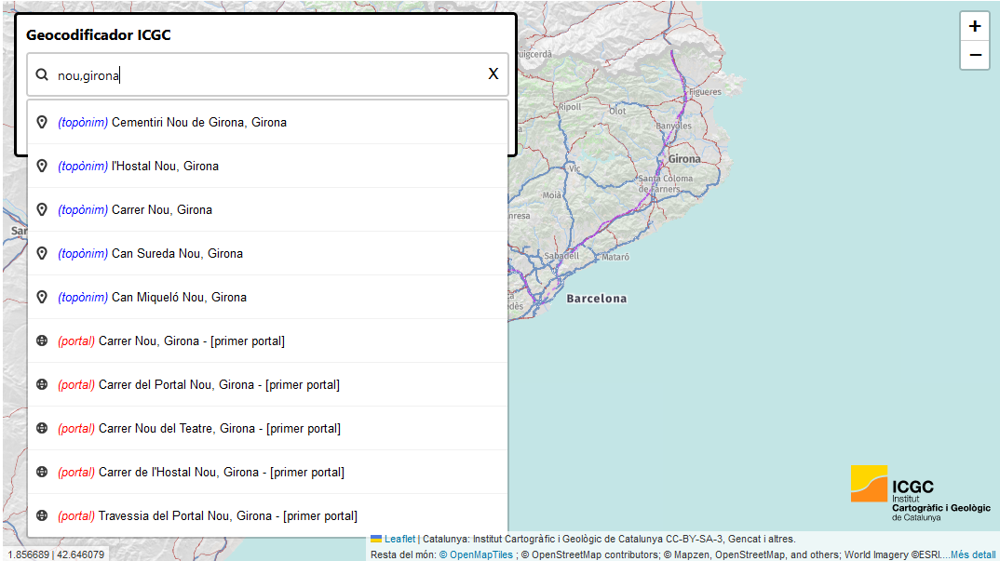
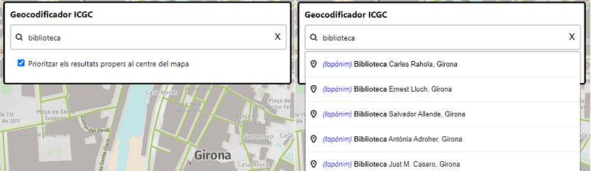
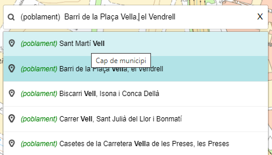
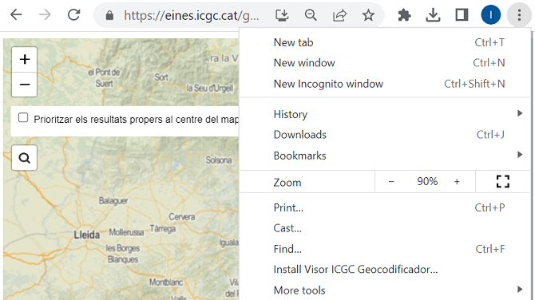
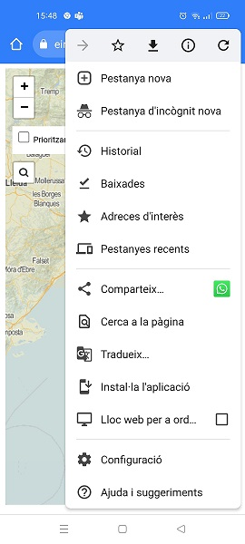

1.6 Visor de mapes amb consultes al Geocodificador ICGC
El visor https://eines.icgc.cat/geocodificador_visor/ és un exemple d'ús del geocodificador ICGC, amb peticions de geocodificació directa i inversa.

Geocodificació directa
Conté un cercador d'adreces i topònims: a mesura que l'usuari va teclejant el text a cercar, s'envien peticions al servei de geocodificació directa, fins a trobar l'element desitjat i la seva ubicació al mapa.
Les peticions enviades utilitzen l'operació autocompletar amb el paràmetre text contenint el text introduït per l'usuari.
Un exemple d'aquestes peticions és https://eines.icgc.cat/geocodificador/autocompletar?text=nou%203&layers=topo1%2Ctopo2%2Caddress&size=5
Geocodificació inversa
Al fer clic sobre el mapa, es fa una petició de geocodificació inversa, obtenint l'adreca postal i el topònim més propers al punt indicat en un radi de 500 metres.
Les peticions enviades utilitzen l'operació invers amb els paràmetres lon i lat contenint el punt marcat per l'usuari.
Un exemple d'aquestes peticions és https://eines.icgc.cat/geocodificador/invers?lat=41.81623479875584&lon=2.4224853515625004&size=1&boundary.circle.radius=0.5&layers=topo2,address
Priorització de resultats
Si la casella Prioritzar els resultats propers al centre del mapa està activada, a la llista de resultats es mostren primer els resultats més propers al centre del mapa.
El punt central del mapa s'indica als paràmetres focus.point.lat i focus.point.lon.
Un exemple de petició és https://eines.icgc.cat/geocodificador/autocompletar?text=biblioteca&focus.point.lat=41.97952806717199&focus.point.lon=2.8178000450134277&layers=topo1%2Ctopo2%2Caddress&size=5

Tipus d'elements a cercar
Els elements cercats pertanyen a una de les següents capes (indicades al paràmetre layers):
-
topo1: topònims de poblament o agrupacions de població (nom de municipi, cap de municipi, entitat de població, disseminat, barri), mostrant en primer lloc els topònims que són nom de municipi o cap de municipi. Apareixen a la llista de resultats amb el prefix (poblament).
-
topo2: resta de topònims. Apareixen a la llista de resultats amb el prefix (topònim).
-
address: portals. Apareixen a la llista de resultats amb el prefix (portal).
Nombre màxim de resultats
El paràmetre size s'ha assignat a 5, per mostrar com a màxim 5 elements de cada una de les capes.
Consulta del tipus de topònims
Al situar el cursor sobre un element trobat de les capes topo1 o topo2, es mostra el tipus de topònim (camp addendum.tipus):

Descàrrega
Es pot descarregar de: https://github.com/OpenICGC/leaflet-geocodericgc-plugin
Implementació
S'ha implementat amb la llibreria Leaflet, utilitzant el plugin leaflet-geocoder-mapzen.
S’utilitza el plugin leaflet-geocoder-mapzen https://www.npmjs.com/package/leaflet-geocoder-mapzen, que s’ha modificat per gestionar els paràmetres size i focus, el prefix i tooltip de cada resultat (camp addendum.tipus en cas dels topònims) i el nivell de zoom del mapa (camp addendum.zoom en cas dels topònims)
<!-- Carregar codi Leaflet del cdn -->
<link rel="stylesheet" href="https://cdnjs.cloudflare.com/ajax/libs/leaflet/1.0.3/leaflet.css">
<script src="https://cdnjs.cloudflare.com/ajax/libs/leaflet/1.0.3/leaflet.js"></script>
<!-- Carregar plugin Leaflet de geocodificació mapzen-->
<script src="js/leaflet-geocoder.js"></script>
// Crear el mapa
var map = L.map('map', {
center: [41.431, 1.8580],
zoom: 8,
minZoom: 2,
maxZoom: 18,
scrollWheelZoom: true,
zoomControl: false
});
var geocodingOptions = {
url: 'https://eines.icgc.cat/geocodificador',
expanded: true,
autocomplete: true,
layers: "topo1,topo2,address",
size: 5,
focus: false,
panToPoint: true
};
geoc
L.control.geocoder(geocodingOptions).addTo(map);
Codi per a incrustar el visor
Per inserir el visor al vostre web, copieu i enganxeu el text següent:
<iframe width="100%" height="500" frameborder="0" scrolling="no" marginheight="0" marginwidth="0" src="https://eines.icgc.cat/geocodificador_visor/" ></iframe>
Funcionalitat PWA
El visor Leaflet https://eines.icgc.cat/geocodificador_visor/ és una aplicació web progressiva (PWA) que presenta la possibilitat de ser baixada i iniciada des de la pantalla principal o el menú d'aplicacions de qualsevol dispositiu amb un navegador web.
Per instal·lar l'aplicació, a Chrome:
Windows

Android
